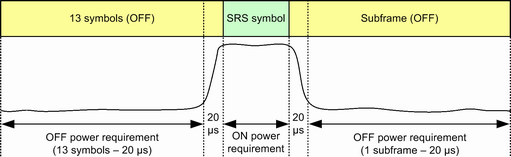
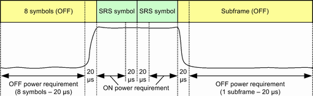

Transmission at excessive uplink power increases interference to other channels while a too low uplink power increases transmission errors. For SRS transmission, 3GPP defines a time mask. The mask contains limits for the UL power during SRS symbol transmission (ON power), the UL power in the adjacent SC-FDMA symbols (OFF power) and the power ramping in-between.
The ON power is specified as the mean UE output power over the SRS symbols, excluding transient periods of 20 μs. For the OFF power, the mean power has to be measured both in the preceding symbols and in the subsequent subframe, excluding transient periods of 20 μs.
The following figures provide a summary of the time periods relevant for ON and OFF power limits for FDD and TDD. The transient periods between the two TDD SRS symbols are only defined for signal configurations with frequency hopping or power change between the two symbols. The measurement assumes that this condition is fulfilled and excludes these transient periods for result calculation.


According to 3GPP, the OFF power must not exceed -48.5 dBm. The ON power must be in the range -10.1 dBm to 4.9 dBm. The limits for ON and OFF power can be set in the configuration dialog.